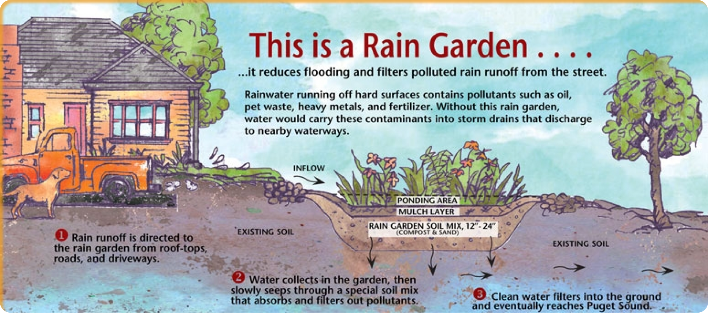

Rain Gardens

Rain gardens are a sustainable and eco-friendly landscaping solution designed to capture and manage rainwater runoff. In the coming decades, the Pacific Northwest is anticipated to see more weather extremes involving significant rainfall during storms, leading for nowhere for extra water to go. In Shoreline, where rainfall is abundant from late fall to spring, rain gardens play a crucial role in reducing stormwater runoff and supporting the local ecosystem.
Rain gardens capture excess storm water runoff into a designated area, where it is then filtered and redispersed into the ground naturally. Graphic courtesy of Washington State University.
Stormwater Management: Rain gardens help manage stormwater runoff, reducing erosion and preventing flooding in the area.
Water Quality: The plants and soil in rain gardens act as natural filters, removing pollutants and contaminants from rainwater before it enters water bodies.
Habitat Creation: Rain gardens provide habitat for pollinators and local wildlife, supporting biodiversity in urban environments.

Aesthetics: Rain gardens enhance the visual appeal of your landscape, adding color and texture to your yard. A dry rain garden in August looks slightly more appealing than a dead, yellow lawn!
1. Site Selection: Choose a location where rainwater naturally collects, preferably at least 10 feet away from your home's foundation. Consider soil drainage and sun exposure.

2. Design: Create a plan for your rain garden that documents the size, shape, materials, and plant selections. This will help you by saving time and money by being strategic and well-prepared. Check out the Shoreline Soak It Up Rebate Program to potentially get a $2000 rebate and design consultation support for creating a rain garden.
3. Excavation: Dig a shallow basin in the chosen area. The size will depend on the amount of runoff you expect to manage. Design the rain garden with gentle slopes and depressions to guide rainwater flow. Place hardscaping materials like rocks and gravel around the perimeter to help with soil erosion and weed suppression. Remember, before starting any excavation project, be sure you call 811 to avoid the risk of damaging underground utilities!
4. Soil Composition: Amend the soil with compost to improve drainage and water retention. This is especially important in the Pacific Northwest's clay soils.
5. Planting: Select plants with deep roots that can absorb water and filter pollutants. Group plants by their water needs. Use native plants that are adapted to the Pacific Northwest climate.
6. Mulching: Apply a layer of mulch to conserve moisture and suppress weeds in the rain garden.
7. Maintenance: Regular maintenance includes weeding, pruning, and monitoring plant health. Inspect the garden's drainage and make adjustments as needed.
Site Evaluation: Assess your property's topography, soil type, and drainage patterns to determine the best location for a rain garden. In some situations, a rain garden may not be an ideal solution, this is okay because it means you may have an opportunity be creative with your yard in a different way!
Slope and Erosion: Avoid building rain gardens on steep slopes, as they may not effectively retain water and could contribute to erosion.
Maintenance Commitment: Rain gardens require regular maintenance to thrive. Consider whether you have the time and resources to care for the garden. Remember the general rule of gardening: the more you plant the more you expoentially have to maintain in years to come!

Plant Selection: Choose native plants that are appropriate for the Pacific Northwest climate and can withstand both wet and dry conditions.
Salal (Gaultheria shallon): A hardy evergreen shrub with glossy leaves and small, bell-shaped flowers. Salal is well-suited for rain gardens in Washington State due to its adaptability to wet conditions.
Red-osier Dogwood (Cornus sericea): Red-osier dogwood is a deciduous shrub known for its bright red stems in the winter. It thrives in wet soils, making it a great choice for rain gardens.
Douglas Spirea (Spiraea douglasii): Douglas spirea is a perennial shrub that produces clusters of pink or white flowers. Its ability to attract pollinators makes it a valuable addition to rain gardens.
Nootka Rose (Rosa nutkana): Nootka rose is a native wild rose with pink flowers and prickly stems. It is ideal for stabilizing soil in rain gardens and provides habitat for wildlife.
Blue Flag Iris (Iris versicolor): Blue flag iris is a perennial plant with striking blue-violet flowers. It thrives in wet or boggy conditions, making it suitable for rain gardens.
Baldhip Rose (Rosa gymnocarpa): Baldhip rose is a native rose species with white or pale pink flowers. It can tolerate wet conditions, making it a good choice for rain gardens.
Western Sword Fern (Polystichum munitum): Western sword fern is an evergreen fern that thrives in moist, shaded areas. It is an excellent option for rain garden edges.
Pacific Ninebark (Physocarpus capitatus): Pacific ninebark is a deciduous shrub that produces clusters of white flowers. It is adaptable to various soil conditions, including those in rain gardens.
Western Red Cedar (Thuja plicata): Western red cedar is a large evergreen tree that can help manage excess water in rain gardens. It also provides valuable habitat for wildlife.
Camas (Camassia quamash): Camas is a native bulb plant with tall spikes of blue or purple flowers. It can tolerate seasonal wet conditions, making it suitable for rain gardens.